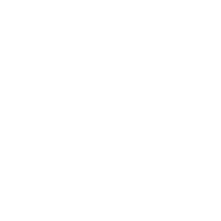
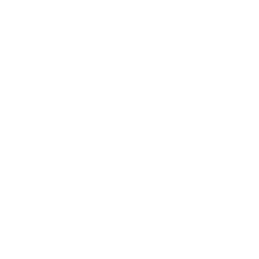

11 月 2 日 · 周一
晚上好，旅人

上限今天 · 2 局
1h 37m
上限 3 小时
还能安心玩 1h 23m
王者荣耀 52m
原神 45m
小獭聊两句

接着玩
崩坏：星穹铁道
昨天 2 局 · 平均 48m
最近 7 天日历 ›
游戏库全部 21 款 ›
最近留下的藏品 ›
选游戏
开战
今日记录
全部 ›
54%
今天 · 2 局
1h 37m / 3 小时
还差 1h 23m 到上限
12 天
原神
13:30 – 14:15
45m
王者荣耀
20:12 – 21:04
52m

留下的都在这里
藏品.
这个月，19 天留下了东西
›
最长连续 7 天 · 最爱周六晚上
第 128 天，你一直在
我
旅人 常驻旅人
打卡率 86% · 连续 12 天
本机 ID ····91C3
最近 7 天日历 ›
12.4/ 20 小时预算
比上周少 2.1h
周六玩超了一次，其他几天都很克制，继续保持～
0h
累计时长
0
开过的局
0
藏品
最常陪你的今年
打卡日历
本月 19 天 · 超时 2 天
游戏管理
21 款 · 改名字和图标
时长管家
单次上限 3 小时 · 周预算 20 小时
小獭助手
她今天有话想说
备份与设置
通知 · AI · 备份 · 关于
你玩过的每一局，我都记得
水獭游时 0.90.1 · 只存在这台手机

确定吗？
按住确认